At Knuckleball, we don't believe in a waste pitch.
Every pitch has a purpose.
Chart every bullpen or live game from your phone. Every pitch is recorded to form heat maps, velocity spreads and post-game reports to help you learn, grow and transform into the best pitcher possible.
Every intention.
Every pitch.
Every result.
Because when you practice with purpose, the results speak for themselves.
Two taps a pitch.
Tap where you aim, then tap where it lands. Knuckleball does the rest.
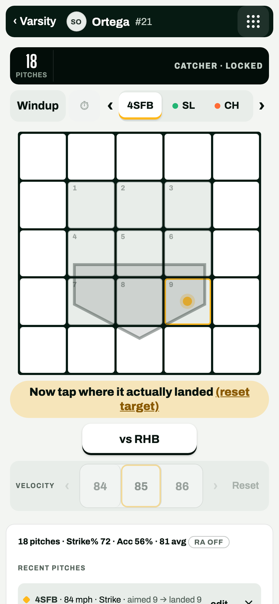
Chart the pen
Target, location, pitch type and velocity, on a grid built for one thumb.
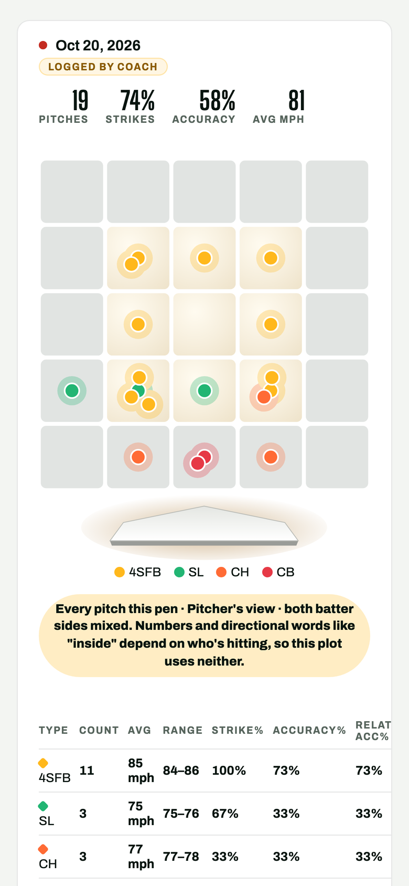
See the pattern
Every pen is saved with its strike rate, accuracy and a plot of every pitch.
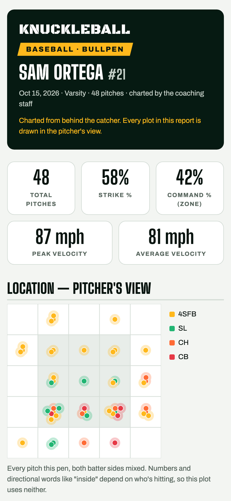
Send the report
One tap sends a clean report to the pitcher and their parents.
Every pitch, read like a pro.
The same charts every report carries: where each pitch type lands, how velocity holds up pitch to pitch, and how a pitcher attacks righties and lefties.
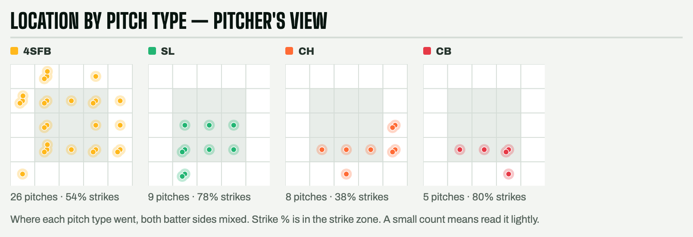
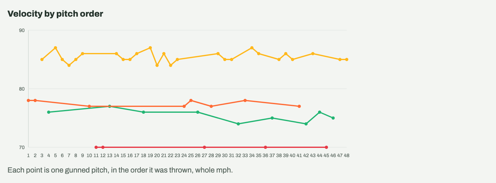
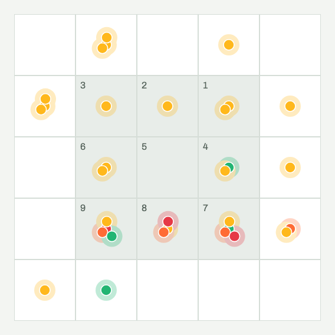
vs RHB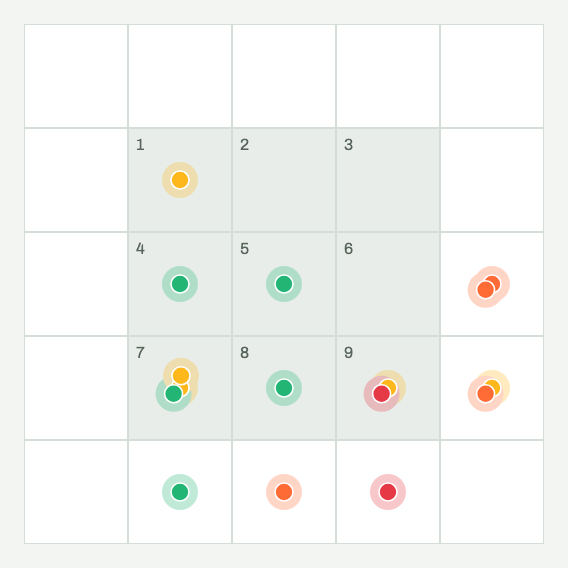
vs LHBRun the whole staff.
Invite your pitchers with a link, chart their pens and live games, and send every pitcher a report.
- One link per teamPitchers join from a link you send. Parents join with them when a player is under 13.
- Live Game chartingEvery pitch with the inning, the outs, the count and the batter's side.
- Your whole rosterEvery pitcher, their number and their pitch mix, one tap from charting.
- Reports in one tapSend the report to the pitcher and their parents from the saved session.
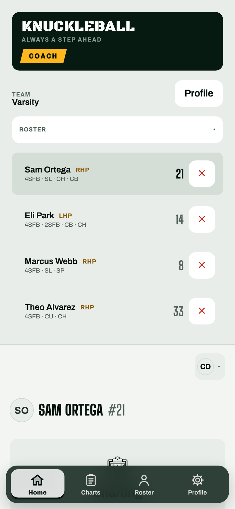
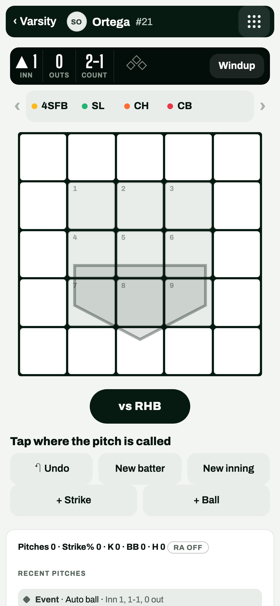
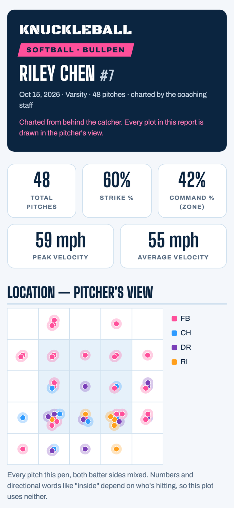
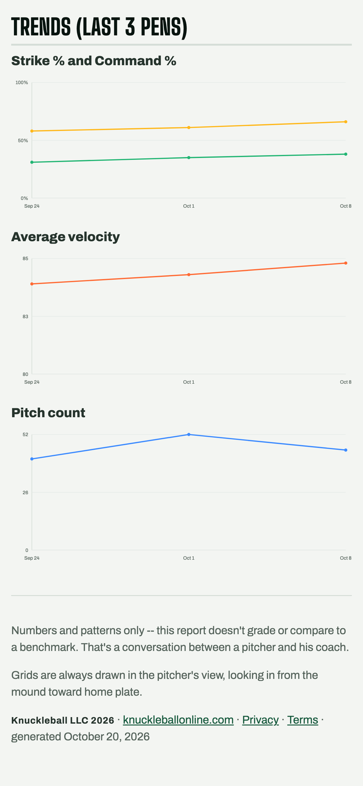
Watch the work add up.
Every pen your coach charts becomes a report. See your strike rate, command and velocity move pen by pen, and share it with the people who drive you to practice.
- Every report in one placeBullpens and live games, from every coach who charts you.
- Progress over timeStrike rate, command and velocity across your recent pens.
- Under 13? A parent sets it upA parent creates the account and approves it.
- Your data, your callDownload everything, or delete your account, from your profile.
Arm care, next to the charts.
Pitch counts, rest days and arm-care routines in the same app, so the work on the mound and the work off it live together.
Charting is free.
Every pitch, every session, at no cost. Paid plans add the season: reports across sessions, progress and more.
Free
For every pitcher and coach.
- Unlimited bullpens and live games
- Session reports
- Baseball and softball
- Works with no signal
Plus
For the household: every player, both sports.
- Everything in Free
- Season trends and progress
- Every player in the family
Team
Priced by level: youth, high school, college.
- Everything in Free
- Reports for the whole staff
- Season reports for every pitcher
Facility
For training facilities and their trainees.
- Everything in Team
- Advanced reports for each trainee
- Many coaches, one account
Prices and plan names are placeholders until Knuckleball sets them.
Good questions.
Does it work with no signal?
Yes. Charting runs on the phone, so a dead-wifi bullpen is fine. The session saves on the phone and syncs when you're back online.
Baseball or softball?
Both. Pick your sport when you join. Each has its own colors and pitch types.
Do I need to download an app?
No. Knuckleball runs in the browser on the phone you already have, and you can add it to your home screen.
How old do players have to be?
Any age. Players under 13 join through a parent, who sets up the account and approves it.
Who sees a pitcher's charts?
The pitcher, the coaches on their team and the parents on the account. Our privacy policy explains how charting data is used.
Can I chart a live game?
Yes. Live Game charts every pitch with the count, the batter's side and the result.
Can I take my data with me?
Yes. Download my data in your profile gives you everything in one file, and you can delete your account from the same screen.
What does it cost?
Charting is free. Paid plans for families, teams and facilities are on the way.